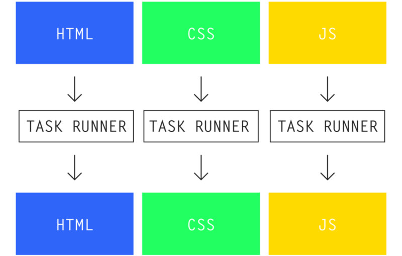
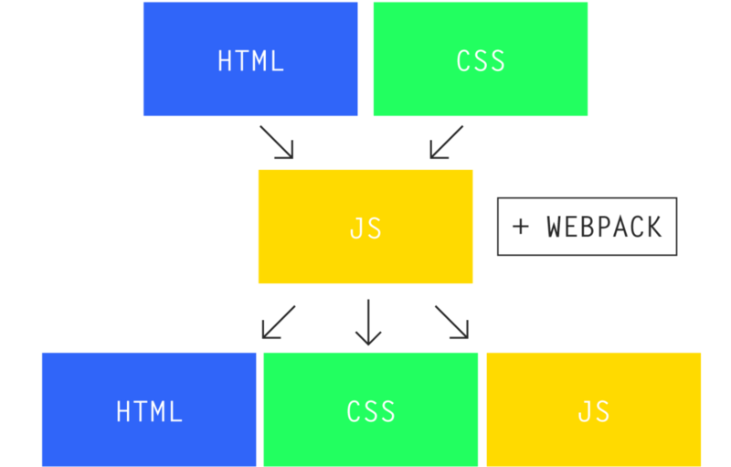

Webpack - это система сборки (бандлер) с массой возможностей.
Gulp/grunt - это общая система (таск раннеры) для организации задач, которая сама по себе сборку не поддерживает, но её можно на ней написать.
Gulp/Grunt - таск раннеры!

The old task runner way: your markup, styles, and JavaScript are isolated. You must manage each separately, and it’s your job to make sure everything gets to production properly.
Webpack - НЕ таск раннер!

The webpack way: if webpack knows about it, it bundles only what you’re *actually* using to production.
Плюсы
Автоматически строит дерево зависимостей ресурсов
Воспринимает как require()- так и import-синтаксисы модуля
Позволяет осуществлять продвинутое разделение (оптимизацию) кода
Hot Reload для более быстрой разработки с помощью React, Vue.js и подобных фреймворков
Минусы
Не подойдет для новичков
Работа с файлами CSS, картинками и другими не JS ресурсами по началу сбивает с толку
Документация могла бы быть лучше
Загрузчики & Плагины
Загрузчики
Преобразуют данные из одного формата в другой.
Могут добавлять в упаковку другие модули.
Как правило, делают одну трансформацию.
Работают только с одним модулем.
Плагины
Имеют доступ ко всем модулям (до и после трансформации).
Могут добавлять в упаковку свои модули (например, «runtime»).
Имеют доступ ко всем ресурсам, создаваемым после упаковки.
Применяются для изменения конфигурации сборки, оптимизации, добавления в модули каких-то объектов, горячего обновления ресурсов.
Первые шаги
$ npm install webpack --save-dev
Описываем конфигурацию для нашего вебпака в webpack.config.js в корне нашего проекта.